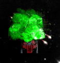

COMP 2021 Galaxy Wars SDL - Final Report
|
Welcome to the Final Report page for COMP2021 Galaxy Wars SDL. Navigate by the sidebar on the left.
This project is curated by:
- IYER, Arvind
- MA, Jonathan Chuan-en
|

|
Perl is a highly versatile programming language with an extensive and active user base. Mainly targeted at text-processing, simple tasks and web-based activities, Perl has capabilities to handle way more than these. Nevertheless, multimedia based programming and game development does not seem to be common among Perl programmers. With Frozen-Bubble, an arcade game from 2002 being the one of the only largely recognized game made entirely in Perl, we decided to take up this challenge of increasing the implementation of this language in the vast field of Game Development.
Being fans of the Star Wars franchise, games and programming, it only felt natural that the path to take was for us to program a game as a tribute to Star Wars. Taking hints of inspiration from popular games like Space Invaders and the more recent Geometry Wars, we decided to make a 2D space-craft shooter.
Galaxy Wars is a one-person 2D shooting game set in the futuristic intergalactic empire. The player poses as the Empire's Standard Fighter pilot, who voyages deep into an unknown realm inhabited by alien species. A swarm of alien ships make their way towards a warp hole undiscovered by the Empire forces. It is the player who could hold off to from the last line of defence...
On the enemy...
Data structure for enemy:
my $enem = {
sprite => SDLx::Sprite->new (
width => $playersize+1,
height => $playersize+1,
image=>'alien_01.png'
),
v_y => 1,
v_x => 0,
shieldOn => 0,
shield => SDLx::Sprite->new (
width => $playersize+1,
height => $playersize+1,
image=>'alien_shield_01.png'
),
};
In terms of graphics, the enemy ship has a streamlined body and greenish-blue highlights to indicate they use alien technology.
In terms of game mechanics, the enemy ship is always moving towards the bottom of the screen (where the warp hole is) at a random speed, which will increase as the game continues.
Below is the code snippet that controls the random movement of the enemy ship:
if(1 + int rand(300-5*(time-$start_time)) == 1)
{
$inst->{sprite}->y( int($inst->{sprite}->y + ( $inst->{v_y} )) );
}
Using the random function, the enemy ship's movement speed (indicated by the v_y element) will vary according to every fream per second.
On the player...
Data structure for player:
my $player = {
ship => $playersprite,
v_y => 0,
v_x => 0,
score => 0,
energy => 100,
lives => 3,
beamOn => 0
};
On the weapon...
Data structure for gun:
my $player = {
ship => $playersprite,
v_y => 0,
v_x => 0,
score => 0,
energy => 100,
lives => 3,
beamOn => 0
};
Initialization of the gun:
my $gun_num = 0;
my @guns;
my $weapon_lvl = 0;
 In terms of graphics, the weapon produces gunshots that are small rectangles generated from the object creation method in the SDL::Sprite module.
In terms of graphics, the weapon produces gunshots that are small rectangles generated from the object creation method in the SDL::Sprite module.
In terms of game mechanics, the weapon is first initialized with a constant velocity and color. Once reached a certain score (refer to Score Calculation for details)
 Besides the regular gun shot weapon, the player ship is also equipped with a pulse laser beam that can last for about 5 seconds. The weapon is activated with the b keypress and this activation will exhaust 100 energy points. Any enemy that comes in contact with the beam will be destroyed immediately.
Besides the regular gun shot weapon, the player ship is also equipped with a pulse laser beam that can last for about 5 seconds. The weapon is activated with the b keypress and this activation will exhaust 100 energy points. Any enemy that comes in contact with the beam will be destroyed immediately.
Below is the code snippet that detects the 5 second limit:
if($player->{beamOn} && $player->{beamTime} < 120 && $player->{energy}>99){
$beam->draw_xy($app, $player->{ship}->x-28, $player->{ship}->y-620);
$player->{beamTime}++;
}
else{
if($player->{beamOn} && $player->{energy}>99){
$player->{energy}-=100;
}
$player->{beamOn} = 0;
$player->{beamTime} = 0;
}
The condition check involves three rules, namely:
(i) If the beam is activated
(ii) If the beam is activated over 120 time units
(iii) If the player ship's energy levels are sufficient, passing the minimum of 100 energy points
On every frame, the player beamTime element will increment by 1. Since the frame per second is set as 24, the beamTime element will increment roughly per second.
For movement of the player, we use a simple system where input from the arrow keys on the keyboard sets a velocity to the player's ship according to the buttons that were pressed.
On the other hand, the movement of enemy ships is made to be slightly unpredictable by adding in a random velocity factor which makes sure that the velocity keeps changing. This increases the difficulty while also making the game less predictable.

Collision between sprites was handled by implementing simple Euclidean geometry. We find the distance between the position of one object and another and this distance factor depends on the type of colliding object.
We can categorize these as:
(i) Player - Enemy
(ii) Enemy - Bullet
(iii) Enemy - Beam
For killing every normal opponent (without shield), the player gets +10 points. Breaking a fortified opponent's shield awards the player +10 points as well. Killing a fortified opponent awards the player +50 points. Allowing an enemy to pass the base of the screen results in -10 points.
Difficulties and Possible Solutions
Memory Management
The most unsurmountable problem is the memory management and lagging problem in Galaxy Wars SDL. If the game is played for long periods of time, we face serious framerate issues. This has been constantly improved over the development timeframe, but is still unsatisfactory. Explicit garbage collection in Perl is not well made as it is mostly made automatic. However SDL objects do not seem to follow the automatic garbage collection and an alternative will be necessary.
Enemy AI
Enemy Artificial Intelligence is a technical difficulty we encounter. We planned on giving the enemies and AI that makes them follow the player and avoid each other in smooth paths, but we found this was too difficult to implement in the given development period.
Progressive Difficulty Accumulation
xxx
Random Power-up Spawning
Currently the game emplyes auto-increment of weapon upgrade (as described in Idea Development). This method is easy to attain and the player satisfaction is not promoted as much. If we employ a power-up spawning, the players would need to put more effort to upgrade their weapons. The power-ups can also enable us to develop more varieties of weapons and of the ways to destroy enemies. For example, some power-ups could increase the energy points while some could decrease the number of enemy ships in the next spawn.
And More...
Galaxy Wars has a nearly infinite scope for improvements. We could add new levels, new enemies, different weapons, powerups and even player customization. Instead of simply sticking to a vertical up down movement of ships, we hope to further develop a gamefield that permits 360 degree rotation allowing the player to shoot at enemies coming from any direction. In the future, even a multiplayer or co-operative form of this game does not seem outlandish and we wish we can make this happen.
|
All in all, developing Galaxy Wars was not an easy path to follow, especially we have to pick-up a new development framework----SDL within a short period of time.
Nevertheless, creating this game has brought great satisfaction to us, and that, not only we had enjoyed the process of realizing game ideas into reality, but also fixing problems and improving our code. This course has provided ample freedom for us, students, to devise our own little projects. We hope we can work together again and achieve great things ahead.
|
|
Project created by Arvind and Jonathan. Spring 2015 @HKUST.